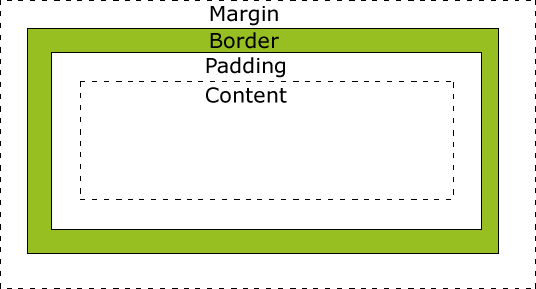
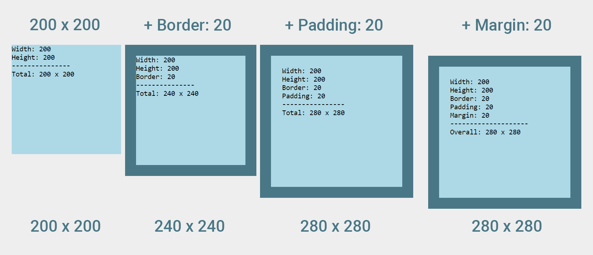

Think of CSS as the icing on a cake.
In developer speak, CSS stands for "cascading style sheets", it's what makes your cake (website) look so delicious. Think of the colours, font, layout, it's no different to the icing type, the candles, anything and everything that goes into decoration is your CSS.
We're going to focus on the layers of our CSS cake. Namely, the margins, borders and padding.
Margins, Borders and Padding
Let's think of our CSS cake as a jam filled cake. The content is the sweet jammy goodness. The padding is the spongy cakey goodness and the margin is the icing.
To simplify:
Here's an image of how these fit together:
Margins are handy for keeping elements spaced out from each other. This way elements are not too close, and not too far from each other.
Padding is good for making content, such as text more readable. It adds that little bit of extra space.
Take a look at this example of padded and margined vs non-padded and non-margined:
 I hope this helps us on our sweet sweet journey towards becoming a CSS cake layering master ＼(≧▽≦)／.